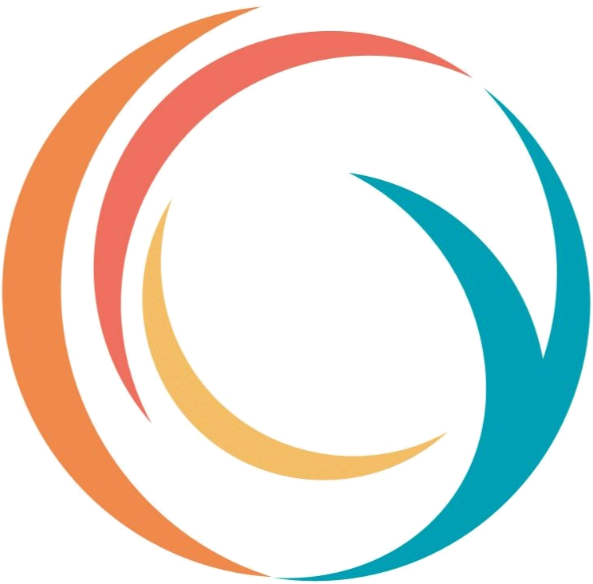
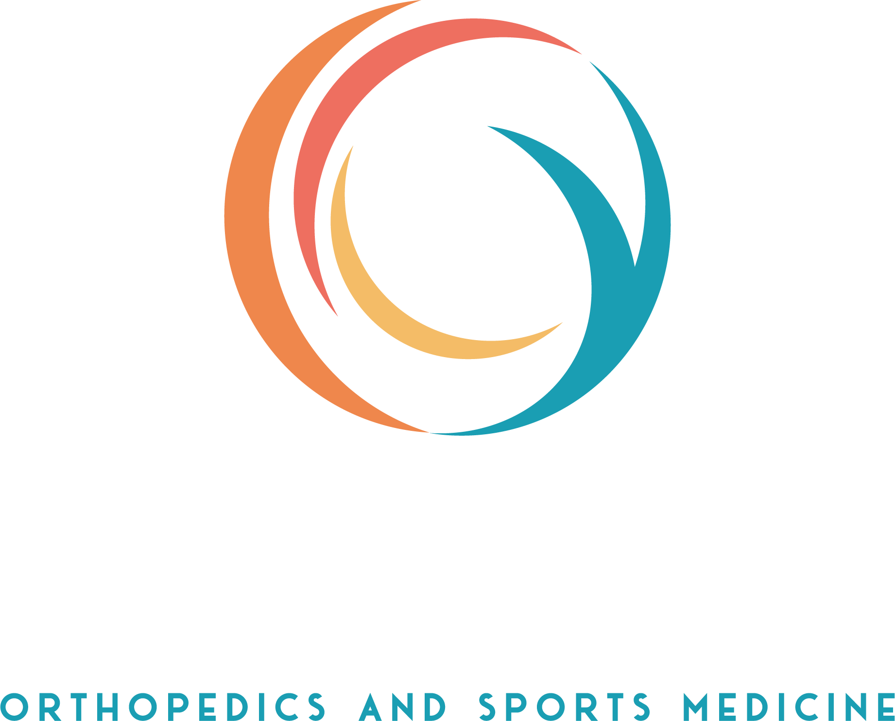
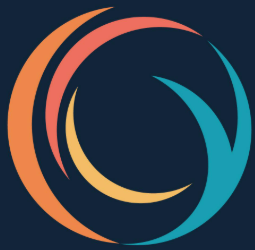
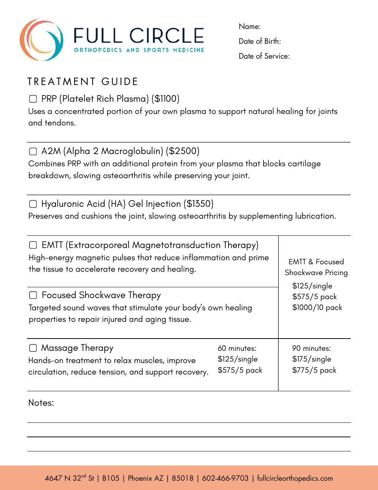

Brand & Digital Experience Manual · Version 1.1 · September 2026
Full Circle Orthopedics and Sports Medicine
A living guide for how the brand looks, speaks, moves, and shows up across patient care, digital experiences, print, and communication.

01
Brand Foundation
The beliefs behind Full Circle.
Everything visual and verbal should reinforce compassionate, listening-first orthopedic care that helps people preserve movement and stay engaged in the life they love.
Why We Exist
We are here to help you reclaim your enjoyment of life with kindness while keeping your body whole. We returned full circle to a time when patient care was rooted in kindness, active listening, and collaboration.
Primary taglineStay Active and Engaged in the Life You Love
Supporting lineWe help you stay active and engaged in the life you love, using your body's own healing properties.
Compassionate
We treat every patient as a person with a story, not a case number.
Proactive
We bring patients current treatment options and education before they have to ask.
Collaborative
We work with you, listening carefully before we act.
Trustworthy
25+ years of experience and straightforward care, every time.
Athletes & Active Adults
Recreational to competitive athletes
Want to avoid unnecessary surgery and downtime
Value performance, independence, and longevity
Research options before committing
Adults Protecting Long-Term Mobility
Managing joint, tendon, or muscle problems
Want a clear diagnosis before choosing treatment
Prefer individualized, unhurried care
Value comfort and direct communication
Out-of-Area Patients
Travel for specialized regenerative care
Need clear pre-visit education and logistics
May include cross-border and future location patients
Brand experience should remain location-independent
02
Visual Identity
Recognizable without being generic medical.
Navy provides authority and structure. Teal carries the primary interaction language. Coral, orange, and yellow add controlled warmth and movement.
Yellow#F4BB66 · RGB 244/187/102 · CMYK 0/23/58/4*Tertiary accent; ratings and small moments.
White#FFFFFFPrimary light surface and reverse logo use.
*CMYK values are process approximations derived from the digital HEX palette. Final print jobs should be proofed by the printer; Pantone equivalents are not defined by the supplied brand assets.
Do
Use exact HEX values for digital work.
Use Navy/White for high-contrast structural areas.
Use Teal for links, navigation states, and informational actions.
Use Orange/Coral selectively for high-value conversion moments.
Don't
Use all warm accents at equal intensity in one component.
Use Teal text directly on Navy for small copy.
Use Yellow as a primary action color.
Use White body text on light Orange/Yellow without contrast verification.
Horizontal WhiteUse on Navy, dark photography, or dark Teal.

Vertical LockupUse where horizontal space is limited.

Swirl Mark — NavyFavicon, profile image, compact applications.
Swirl Mark — WhiteCompact use on dark backgrounds.
Brand motif
The Full Circle ring can become a background language.
Use the swirl/ring at approximately 3–8% visual opacity in large decorative backgrounds, section transitions, hero artwork, loading states, and social layouts. The motif reinforces continuity, movement, wholeness, and the return to patient-centered care.
Do not
Distort, stretch, or recolor the official logo.
Use several full-color logos as decoration.
Place the motif behind dense text at a level that harms readability.
03
Typography
Clear, calm, and easy to read.
Open Sans is the core digital typeface from the current manual assets. Glacial Indifference remains a display option for print and selected branded graphics.
H1 — HeroOpen Sans 300 / 700 36–64px line-height 1.05–1.15
Stay Active. Stay Whole.
H2 — SectionOpen Sans 600 24–36px Navy
Non-Surgical Treatment Options
H3 — SubsectionOpen Sans 600 17–20px
Platelet-Rich Plasma (PRP)
BodyOpen Sans 400 15–18px line-height ≥1.6
At Full Circle, you're more than just another patient — you're a person with a story, and we're here to listen. We provide care that goes beyond the presenting symptom.
LabelOpen Sans 700 10–12px tracking .12–.14em
Regenerative Orthopedics
CTAOpen Sans 700 13px
Make an Appointment
Secondary font roles
Glacial Indifference: print display headlines and branded graphics.
Futura: legacy/print use only when it already exists in an approved asset.
Roboto Bold: compatibility fallback; do not mix it casually with Open Sans.
Avoid
More than two visible type families in one application.
Very light body text below 16px.
All-caps paragraphs.
Decorative typefaces for clinical instructions.
04
Voice & Tone
Expert without sounding cold.
The voice should feel human, calm, specific, and confident without hype.
Warm, not clinical
Translate medical expertise into language a patient can understand.
“The patient will undergo a minimally invasive regenerative procedure.”
“We'll explain your options and how they may help your body recover.”
Confident, not arrogant
Experience is a proof point, not a reason to make superiority claims.
“We are the #1 orthopedic clinic in Arizona.”
“For more than 25 years, we've helped active adults navigate orthopedic injuries.”
Empowering, not alarming
Patients should leave content with clarity, not fear.
“Act now before surgery becomes inevitable.”
“A clear evaluation can help you understand the options available to you.”
Personal, not generic
Speak directly to what people want to return to doing.
“Patients experiencing joint pain should seek treatment.”
“If knee pain is keeping you from the activities you love, start by finding out what's causing it.”
Brand / Homepage
Aspirational and patient-first
Movement and life goals before technology
Short, calm statements
Clinical / Educational
Precise, cautious, evidence-aware
Explain jargon immediately
Avoid guaranteed outcomes
Aftercare / Instructions
Direct and actionable
Use numbered steps and timing
Clearly state when to contact the clinic
05
Photography
Show the life patients want to get back to.
Active-lifestyle photography leads the brand. Human care, treatment, and technology support the story without making the experience feel sterile.
Active Life — primary photography categoryRunning, hiking, tennis, golf, strength, and everyday movement. Natural light and candid energy.
01 · Active Life — ~50%
Lead with outcomes and mobility rather than procedures.
02 · Human Care — ~25%
Courtney listening, consultation, team interaction, and comfort.
03 · Treatment — ~15%
Real procedures shown calmly and professionally; avoid fear-inducing closeups.
04 · Technology — ~10%
Shockwave, EMTT, ultrasound, and equipment as supporting proof of capability.
Photo do's
Natural or warm controlled lighting.
Consistent background and crop system for team portraits.
Authentic active adults in realistic environments.
Full Circle-branded uniforms when staff are visible.
Photo don'ts
Do not alter a real person's identity or body with generative AI.
Avoid mixed filters and wildly different color grading.
Avoid cold blue sterile imagery as the dominant visual language.
06
Digital Experience
The brand expressed as a usable interface.
These rules align the manual with the new website prototypes so the website does not become a separate visual system.
Action hierarchy
Teal is the core interaction color. Orange is reserved for high-value conversion moments so “Make an Appointment” remains distinct from browsing or communication actions.
Use generous whitespace, calm section rhythm, and rounded corners in the 6–16px range. Avoid dense dashboards or visually aggressive medical UI.
Maximum reading width: ~72 characters
Touch targets: at least 44px
Use cards only when they improve grouping
Keep one clear primary action per section
Full Circle motif
The swirl can appear as a low-opacity watermark, large background ring, icon container, progress/loading cue, or subtle transition element.
Navigation & conversion
The preferred web structure emphasizes Conditions, Treatments, How It Works, Resources, and About. WhatsApp and Make an Appointment remain persistent patient actions.
No “Providers” top-level item required
Condition-first and treatment-first discovery
Mobile sticky actions are acceptable
Courtney's authority appears after patient needs are established
Contrast combinations
Foreground / Background
Use
Status
White / Navy
Headers, footer, dark feature panels
Preferred
Navy / White
Body copy, cards
Preferred
White / darkened Teal
Buttons and strong UI controls
Preferred
Navy / Orange
Primary conversion CTA
Preferred
Teal / Navy
Small text
Avoid
White / light Orange or Yellow
Normal-size text
Avoid
07
Brand Applications
Use the real assets as reference points.
Existing print collateral and the website prototype show how the identity can scale across patient touchpoints.
Rack CardExisting branded collateral. Navy structure, multi-color swirl, white content surfaces, active-lifestyle imagery.Open source PDF →

Treatment GuideReference for structured clinical information, restrained graphics, and print hierarchy.Open source PDF →
Dark-Surface ApplicationUse white logo and high-contrast text on Navy. Teal and warm colors become controlled accents, not body-copy colors.
08
Email Signatures
Create a consistent signature and copy the HTML.
Fill in the fields below. The preview and HTML update automatically. The generated HTML intentionally uses simple tables and inline styles for better compatibility across email clients.
Tagline, reviews & logo
Only the name is required. Clear any field to leave it out of the signature.
Use Copy signature for Gmail, Outlook and iPhone Mail. Use Copy HTML only for editors that take raw HTML source.
View HTML source
Install the signature
Fill in the generator, click Copy signature, then follow the steps for your email app. Send a test email to yourself afterwards to check the logo and links.
Gmail (computer)
In Gmail, click the ⚙ gear → See all settings.
On the General tab, scroll to Signature → Create new and name it (e.g. “FCO”).
Click in the signature box and paste (Ctrl/⌘+V).
Under Signature defaults, pick it for new emails and for replies/forwards.
Scroll to the bottom and click Save Changes.
The Gmail phone app uses this signature only while its own “Mobile signature” setting is left empty.
Outlook
Open the signature settings for your version:
New Outlook / web: ⚙ Settings → Account → Signatures → + New signature
Classic Outlook (Windows): File → Options → Mail → Signatures… → New
Outlook for Mac: Outlook → Settings → Signatures → +
Name the signature, paste into the editor, and choose it as the default for new messages and replies/forwards.
Click Save (or OK).
Each Outlook app stores its own signature, so repeat this on every computer and in Outlook on the web.
iPhone Mail
Open this page in Safari on the iPhone, fill in the generator, and tap Copy signature.
Go to Settings → Apps → Mail → Signature (on iOS 17 and earlier: Settings → Mail → Signature).
Choose All Accounts or Per Account, delete “Sent from my iPhone”, then tap and hold → Paste.
If the formatting disappears, shake the iPhone right away and tap Undo to bring it back.
Go back to save. Send yourself a test email.
The logo must be loaded from the hosted manual (an https:// address) to show up on the recipient's side.
09
Governance
Keep the system consistent as it grows.
The brand should evolve through documented decisions, not one-off exceptions.
Brand ownerCourtney Kelm PA-C approves clinical positioning, patient promises, and major brand decisions.Digital & designHéctor Neudert maintains web implementation, digital templates, accessibility, and visual consistency.Review cycleReview the manual when a new location, major service line, or new primary channel changes how the brand is expressed.
Brand Questions?
Use this manual as the default reference before creating new patient-facing materials.
Clinical DirectorCourtney Kelm PA-C
Digital & BrandHéctor Neudert
Patient OutreachBecky Forbes
Websitefullcircleorthopedics.com
FCO Brand & Digital Experience Manual · Version 1.1 · September 2026 · Living document